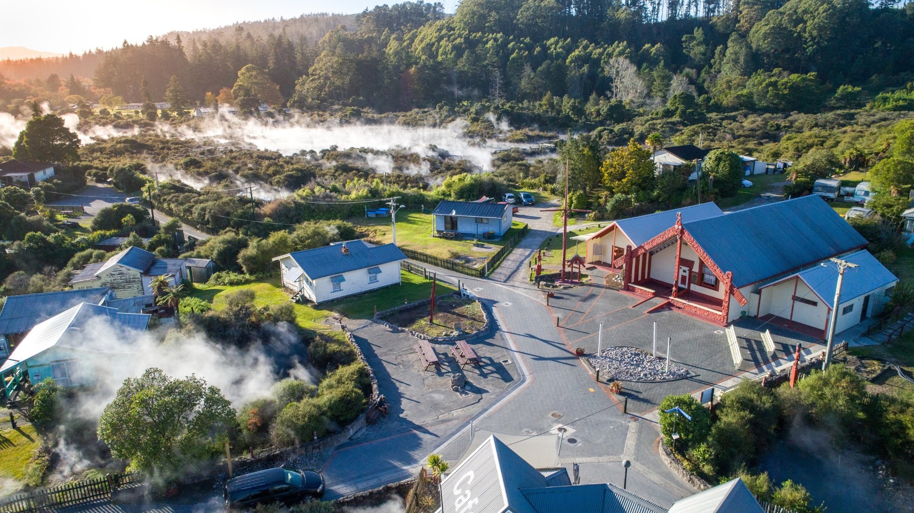

Von Tahiti flogen wir nach Auckland. Nach den warmen Tagen auf Moorea war Neuseeland schon klimatisch eine Umstellung. Noch bevor wir das Flugzeug verlassen durften, geschah allerdings etwas, womit wir nicht gerechnet hatten. Alle Passagiere blieben auf ihren Plätzen sitzen, während zwei Männer mit Sprühdosen durch die Kabine gingen und alles einnebelten. Damit sollten offenbar Schädlinge und Krankheitserreger vernichtet werden, die der neuseeländischen Landwirtschaft gefährlich werden konnten. Für uns wirkte das zunächst ziemlich absurd. Unser erster Eindruck von Neuseeland bestand also aus einer Ladung Desinfektionsmittel.
Anschließend holten wir unseren Mietwagen ab. Es war unser erstes Land mit Linksverkehr. Ich fuhr vorsichtig vom Parkplatz, konzentrierte mich auf jede Kreuzung und bog prompt in die falsche Richtung ab. Es ging aber alles gut. Nach einer Weile gewöhnte man sich daran, links zu fahren, auch wenn man beim Abbiegen immer wieder kurz überlegen musste, wo man eigentlich hingehörte.
Wir fuhren zunächst nach Norden, über Whangārei und Ōpua bis nach Paihia an der Bay of Islands. Die Gegend war nur dünn besiedelt. Stundenlang führte die Straße durch grüne Landschaften, vorbei an Farmen, Obstplantagen und unzähligen Schafen. Viel Landwirtschaft, wenig Menschen. Gerade diese Einsamkeit machte die Begegnungen angenehm. Die Leute waren interessiert, freundlich und hilfsbereit. Das ist mir später auch in anderen dünn besiedelten Gegenden der Welt aufgefallen: Wo nur selten jemand vorbeikommt, freut man sich offenbar noch über Fremde.
In Paihia fanden wir ein kleines Bed and Breakfast und blieben ein oder zwei Nächte. Am nächsten Tag machten wir eine Bootstour durch die Bay of Islands. Die Bucht besteht aus einer Vielzahl kleiner Inseln, von denen viele damals völlig unbewohnt wirkten. Auf manchen sah man höchstens ein paar Schafe. Das Wasser war klar und grün, die Inseln dicht bewachsen. Heiß war es nicht. Das Wetter war eher frisch, aber angenehm, und gerade dadurch wirkte die Landschaft ruhig und fast menschenleer.
Von dort fuhren wir wieder nach Süden und weiter auf die Coromandel-Halbinsel. Auch dort fanden wir eine einfache Unterkunft in der Nähe der Küste. An den genauen Namen des Ortes erinnere ich mich nicht mehr. Die Halbinsel war landschaftlich reizvoll, mit kleinen Buchten, bewaldeten Hügeln und kaum Verkehr. Zwischendurch kamen wir durch landwirtschaftlich geprägte Gegenden mit Obstbau und ersten Weinanbaugebieten. Neuseeland war damals noch weit weniger touristisch als heute. Man fuhr lange Strecken, ohne vielen Menschen zu begegnen.
Weiter südlich kamen wir durch die Gegend um Hamilton. Ich erinnere mich an einzelne Häuser, die noch Schäden eines Erdbebens zeigten. Ob es tatsächlich Hamilton selbst gewesen war oder ein Ort in der Umgebung, weiß ich heute nicht mehr genau. In meiner Erinnerung gehörten diese beschädigten Häuser jedenfalls zu dieser Fahrt.
Unser wichtigstes Ziel war Rotorua. Dort blieben wir am längsten, wahrscheinlich zwei oder drei Tage. Wir wohnten im Thermal Holiday Park, einer einfachen Gemeinschaftsunterkunft. Unser Zimmer war spartanisch: Betten, Dusche, mehr brauchten wir nicht. Gekocht wurde in einer Gemeinschaftsküche. Dort traf man junge Reisende aus verschiedenen Ländern und kam schnell miteinander ins Gespräch. Die Atmosphäre war locker und unkompliziert. Nur zwei Schweizer kapselten sich auffällig ab und wollten mit niemandem etwas zu tun haben. Auch das gab es.
Gegenüber lag Whakarewarewa, das geothermisch aktive Māori-Dorf. Dort lebten tatsächlich Familien zwischen heißen Quellen, dampfenden Spalten und brodelnden Schlammlöchern. Überall roch es nach Schwefel. Aus dem Boden stieg Dampf auf, Wasser kochte in kleinen Becken und zwischendurch schossen Geysire in die Höhe.

Seit unserem Besuch im Yellowstone-Nationalpark interessierten uns solche Landschaften besonders. Im direkten Vergleich war Rotorua natürlich kleiner und weniger spektakulär. Trotzdem gefiel es uns sehr. Hier lag das Geothermische nicht irgendwo in einem abgelegenen Nationalpark, sondern mitten im Alltag der Menschen.
Am Abend besuchten wir eine traditionelle Māori-Aufführung. Es wurde gesungen und getanzt, und natürlich gehörte auch der Haka dazu. Der Haka ist kein bloßer Tanz, sondern eine kraftvolle Darstellung von Stolz, Stärke und Zusammenhalt. Früher konnte er auch dazu dienen, Gegner vor einem Kampf einzuschüchtern. Dazu gehörten laute Rufe, weit aufgerissene Augen, kräftige Bewegungen und die herausgestreckte Zunge.
Wir saßen ausgerechnet in der ersten Reihe. Damit war praktisch vorprogrammiert, dass irgendwann jemand aus dem Publikum auf die Bühne geholt wurde. Natürlich traf es mich. Ich musste mich neben einen Māori stellen und den Haka mitmachen. Ich gab mir Mühe, die Augen weit aufzureißen, laut zu rufen und die Zunge möglichst bedrohlich herauszustrecken. Ob sich davon irgendjemand erschreckt hat, weiß ich nicht. Das Publikum hatte jedenfalls seinen Spaß, und ich glaube, ich schlug mich gar nicht so schlecht.
Damit endete unser Aufenthalt auf der Nordinsel. Wir wären gerne noch weiter nach Süden und vielleicht sogar auf die Südinsel gefahren. Dafür reichte die Zeit nicht. Also brachten wir den Mietwagen zurück, fuhren zum Flughafen und stiegen in die Maschine nach Neukaledonien.
Neuseeland blieb mir vor allem als stilles, grünes und erstaunlich menschenleeres Land in Erinnerung. Es gab mehr Schafe als Menschen, viel Landwirtschaft, Obstplantagen, erste Weinberge und überall eine große Freundlichkeit. Nach Tahiti war es eine völlig andere Welt. Aber auch hier hatten wir nach wenigen Tagen das Gefühl, dass wir noch viel länger hätten bleiben können.